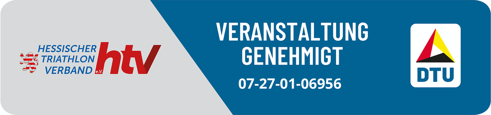

Offizielles Dokument
Ausschreibung und Teilnahmebedingungen 2027
39. Erich-Fill-Triathlon Taunusstein
- Veranstaltungstermin
- Sonntag, 16. Mai 2027
- Wettkampfort
- Freibad Taunusstein
Zum Schwimmbad, 65232 Taunusstein - Veranstalter / Ausrichter
- United Teams Rhein-Ruhr e.V.
- DTU-Genehmigungsnummer
- 07-27-01-06956
genehmigt durch den HTV e.V. - Wettkampfleitung
- United Teams Rhein-Ruhr e.V.
- Wettkampfgericht
- Lizenzkampfrichter des HTV e.V.

Ausschreibung
Distanzen, Gebühren, Ablauf und Wettkampfregeln. Dieser Teil wird für jeden Wettkampf neu gefasst.
Distanzen und Formate
- SPRINT — Einzel und Staffel: 0,5 km Schwimmen, 20 km Radfahren, 5 km Laufen
- OLYMPISCH — Einzel und Staffel: 1 km Schwimmen, 40 km Radfahren, 10 km Laufen
- Hessische Triathlonliga (HTV, 3.–5. Liga, Sprint) — bestätigt
- Rheinland-Pfälzische Triathlonligen (RTV, alle Ligen, Sprint) — bestätigt
Zulassungskriterien
Grundsätzlich kann am Erich-Fill-Triathlon jeder teilnehmen, sofern keine gesundheitlichen Bedenken bestehen.
Teilnehmer für die Olympische Distanz (nur Einzel) benötigen einen gültigen DTU-Startpass, der bei der Abholung der Startunterlagen vorzuweisen ist. Andernfalls muss eine Tageslizenz erworben werden (Kosten 20 €, in bar).
Mindestalter
Die Teilnahme von Startern der Altersklasse Jugend A (AK 16–17, Jahrgänge 2010 und 2011) ist nur in den SPRINT-Distanzen erlaubt und wird dort separat ausgewertet. In der Olympischen Distanz ist die Teilnahme erst ab Jahrgang 2009 (AK 18/19, Junioren) möglich.
Jeder Teilnehmer ist für die technische Sicherheit der persönlichen Ausrüstung selbst verantwortlich.
Organisationsgebühren
| Anmeldezeitraum | Einzel | Staffel |
|---|---|---|
| bis 31.01.2027 | 60 € | 70 € |
| 01.02.2027 – 31.03.2027 | 70 € | 80 € |
| 01.04.2027 – 02.05.2027 | 80 € | 90 € |
| Anmeldezeitraum | Einzel | Staffel |
|---|---|---|
| bis 31.01.2027 | 70 € | 80 € |
| 01.02.2027 – 31.03.2027 | 80 € | 90 € |
| 01.04.2027 – 02.05.2027 | 90 € | 100 € |
Ein Wechsel des Wettkampfformats nach der Anmeldung ist nicht möglich — weder in eine längere noch in eine kürzere Distanz. Wer die Distanz wechseln möchte, wendet sich vor der Anmeldung an den Veranstalter: eft@utrr.de.
Anmeldung und Kontingente
Die Anmeldung erfolgt ausschließlich online über das Anmeldeportal. Rechtlich maßgeblich für den Vertragsschluss ist § 3.
Onlineanmeldeschluss ist der 2. Mai 2027 um 23:59 Uhr, bei Erreichen der Starterlimits entsprechend früher.
Die Zahl der Startplätze ist begrenzt — für beide Wettkampfformate gleichermaßen. Ist das Kontingent eines Formats ausgeschöpft, wird die Anmeldung dafür vorzeitig geschlossen. Nach Schluss der Onlineanmeldung sind Nachmeldungen nicht mehr möglich.
Wertungen und Preisgelder
Altersklassenehrungen erfolgen pro Wettkampfformat (nur Sprint und Olympisch), getrennt nach Männern und Frauen. Für Wertung und Siegerehrung werden die Altersklassen in Zehnerschritten zusammengefasst: Je zwei benachbarte Altersklassen bilden eine gemeinsame Wertungsgruppe — AK 20–29, AK 30–39, AK 40–49 und so fort. Starter unterhalb der AK 20 werden in der AK 20 gewertet. Die Einteilung der Startgruppen bleibt davon unberührt.
Alle Preise, auch die Preisgelder, werden ausschließlich im Rahmen der Siegerehrung persönlich an die Sieger und Platzierten ausgehändigt.
| Platz | Sprint | Olympisch |
|---|---|---|
| 1. Platz | 150 € | 200 € |
| 2. Platz | 100 € | 150 € |
| 3. Platz | 50 € | 100 € |
Staffeln
Die Staffelwettbewerbe haben keine Jahrgangswertung. Staffeln werden ausschließlich in der Staffelwertung geführt; eine Einzelwertung der Staffelmitglieder findet nicht statt.
Verwendung der Organisationsgebühr
Verkehrssicherungsmaßnahmen (Verkehrssicherungsmaterial für Straßensperrungen, Beschilderungen, umfassende Versicherungen), allgemeine Sicherungsmaßnahmen (Wasserrettung, Sanitätsdienste, Feuerwehr), Zeitnahme, Dienstleister, Nutzung des Freibades und der Infrastruktur des Bades, Strom, Abwasser, Toiletten, Radständer, Absperrgitter, behördliche Genehmigungsgebühren, Zielverpflegung, HTV-Genehmigungsgebühren, Kampfrichter, Onlineergebnislisten, Onlineurkunden, Sicherheitsdienste, Transportkosten, Beschallung, Moderation, Badekappen, Startnummern, Grafik, Internet und Verbrauchsmaterial.
Zeitmessung
Die Zeitmessung erfolgt über Transponder, die im Rahmen des Rad-Check-ins ausgegeben werden und am linken Fuß getragen werden müssen. Bei Nichtrückgabe oder Verlust des Transponders werden dem Teilnehmer die Wiederbeschaffungskosten in Höhe von 100 € in Rechnung gestellt (siehe § 2 Abs. 4).
Zeitplan
Der Zeitplan wird unter „Aktuelles“ auf der Website der Veranstaltung bekannt gegeben.
Regeln Wechselzone, Rad-Check-in und Rad-Check-out
Der Check-in in die Wechselzone erfolgt an einem zentralen Zugang. Ein Check-out kann nur mit Startnummer und Rad sowie gegen Rückgabe des Transponders inklusive Befestigungsband erfolgen.
Pro Startgruppe steht eine Reihe Radständer zur Verfügung. Diese sind gekennzeichnet und ausschließlich durch die Athleten der jeweiligen Startgruppe zu nutzen.
Die Laufwege zu den Wechseln sind gekennzeichnet. Zusätzlich stehen Ordner zur Einweisung zur Verfügung. Wir bitten um besondere Rücksichtnahme beim Verhalten in der Wechselzone.
Regeln Schwimmen
Das Schwimmen erfolgt im 50-Meter-Sportbecken des Freibades Taunusstein. Es stehen insgesamt fünf Bahnen für den Wettbewerb zur Verfügung. Die Teilnehmer müssen die Badekappen des Veranstalters tragen. Das Wasser ist beheizt.
Für die Nutzung von Neoprenanzügen gilt die Sportordnung der DTU. Die Entscheidung zur Nutzung wird am Wettkampfmorgen nach Temperaturmessung durch die Kampfrichter bekannt gegeben und per Aushang mitgeteilt.
Regeln Radfahren
Die Radstrecke ist voll gesperrt. Es besteht eine entsprechende straßenverkehrsrechtliche Anordnung der Genehmigungsbehörde — ein Sicherheitsaspekt, den nicht alle Triathlonveranstaltungen bieten.
Dennoch gilt für die Teilnehmer die Straßenverkehrsordnung. Es besteht Rechtsfahrgebot, Windschattenfahren ist untersagt.
- Ein Startnummernaufkleber ist am Rad (Sattelstütze) zu befestigen.
- Ein weiterer Startnummernaufkleber ist am Helm zu befestigen, von vorne oder von links sichtbar.
- Die Startnummer ist am Körper zu tragen, von hinten sichtbar.
Jeder Teilnehmer ist für die technische Sicherheit der persönlichen Ausrüstung selbst verantwortlich; zur Haftung siehe § 8.
Regeln Laufen
Teilnehmer dürfen sich nicht von Nichtteilnehmern betreuen oder begleiten lassen. Die Startnummer ist wegen der zusätzlichen manuellen Zieleinlaufkontrolle von vorne sichtbar zu tragen.
Teilnahmebedingungen
Die vertraglichen Bedingungen der Teilnahme. Dieser Teil bleibt von Jahr zu Jahr weitgehend unverändert; er ersetzt die früher getrennt geführten AGB. Mit der Anmeldung erkennt jeder Teilnehmer ihn an.
§ 1Teilnahmevoraussetzungen
- Teilnahmeberechtigt ist, wer sich ordnungsgemäß angemeldet hat, die in Teil A genannten Zulassungskriterien erfüllt und im Besitz einer gültigen Startnummer des Erich-Fill-Triathlons 2027 ist.
- Es gelten die Altersgrenzen nach Teil A. Teilnehmer, die das 18. Lebensjahr noch nicht vollendet haben, benötigen eine schriftliche Einverständniserklärung der Eltern oder Erziehungsberechtigten.
- Jeder Teilnehmer verpflichtet sich, seine gesundheitlichen Voraussetzungen zur Teilnahme beurteilt zu haben, gegebenenfalls durch Konsultation eines Arztes. Jeder Teilnehmer ist für ausreichenden Krankenversicherungsschutz selbst verantwortlich und bestätigt dies mit der Anmeldung.
§ 2Pflichten der Teilnehmer
- Jeder Teilnehmer hat für eine funktionstüchtige Ausrüstung zu sorgen und insbesondere beim Radfahren einen Helm zu tragen, der den Bestimmungen der DTU entspricht.
- Jeder Teilnehmer hat den Anweisungen und Vorgaben des Veranstalters, des Ausrichters sowie der Helfer und Wettkampfrichter Folge zu leisten. Zuwiderhandlungen, die den ordnungsgemäßen Verlauf der Veranstaltung stören oder Teilnehmer, Helfer oder Zuschauer gefährden könnten, berechtigen den Veranstalter, den betreffenden Teilnehmer von der Veranstaltung auszuschließen oder jederzeit zu disqualifizieren.
- Eine Anmeldung oder ein Start unter falschem Namen ist grob unsportlich und hat den sofortigen Ausschluss zur Folge. Anders als bei einer Disqualifikation darf das Rennen dann nicht zu Ende gebracht werden; das ist aus Versicherungs- und Haftungsgründen erforderlich. Siehe dazu auch die Sportordnung der DTU.
- Der Transponder zur Zeitmessung ist beim Rad-Check-out zurückzugeben. Bei Nichtrückgabe oder Verlust werden die in Teil A genannten Wiederbeschaffungskosten in Rechnung gestellt.
- Der Veranstalter behält sich vor, Teilnehmer ohne Angabe von Gründen nicht zur Anmeldung zuzulassen oder auch nach erfolgter Anmeldung von der Veranstaltung auszuschließen.
§ 3Anmeldung und Vertragsschluss
- Die Anmeldung ist eine kostenpflichtige und verbindliche Zusage zur Teilnahme unter ausdrücklicher Anerkennung dieses Dokuments in beiden Teilen. Sie ist ausschließlich online über das Anmeldeportal möglich.
- Jeder Teilnehmer darf sich nur einmal pro Wettkampfformat anmelden. Doppelanmeldungen werden nicht akzeptiert.
- Die Anmeldung kann nur angenommen werden, wenn dieses Dokument und die Wettkampfordnung der DTU anerkannt sind, die Organisationsgebühr beim Veranstalter eingegangen ist und der Veranstalter die Anmeldung angenommen und ihr nicht bis zum Wettkampftag widersprochen hat.
- Anmeldeschluss und Teilnehmerkontingente ergeben sich aus Teil A. Nachmeldungen sind nicht möglich.
§ 4Zahlung der Organisationsgebühr
- SEPA-Lastschrift. Die Organisationsgebühr wird im SEPA-Basislastschriftverfahren eingezogen. Mit der Anmeldung erteilt der Teilnehmer dem Veranstalter ein SEPA-Lastschriftmandat und weist sein Kreditinstitut an, die Lastschrift einzulösen. Gläubiger ist United Teams Rhein-Ruhr e.V. Gläubiger-Identifikationsnummer, Mandatsreferenz und die Frist der Vorabankündigung ergeben sich aus dem Mandat.
- Gedeckte Konten. Der Teilnehmer sorgt für die Deckung seines Kontos. Wird die Lastschrift mangels Deckung, wegen einer falschen Bankverbindung oder aus einem anderen vom Teilnehmer zu vertretenden Grund nicht eingelöst, trägt der Teilnehmer die dem Veranstalter dadurch entstehenden Kosten seines Kreditinstituts. Dem Teilnehmer bleibt der Nachweis vorbehalten, dass kein oder ein wesentlich geringerer Schaden entstanden ist.
- Keine Teilnahme ohne Zahlungseingang. Geht die Organisationsgebühr nicht ein, kann der Veranstalter nach Fristsetzung vom Vertrag zurücktreten und den Startplatz anderweitig vergeben.
§ 5Ausgabe der Startunterlagen
Die Startunterlagen werden am Tag der Veranstaltung beim Check-in ausgegeben. Dabei erfolgt die Identitätskontrolle. Jeder Teilnehmer hat den Erhalt und die Vollständigkeit der Startunterlagen zu prüfen; spätere Reklamationen sind ausgeschlossen.
§ 6Rücktritt, Übertragung des Startplatzes und Ausschluss
- Keine Erstattung bei Rücktritt. Die Anmeldung ist verbindlich. Bei einem Rücktritt des Teilnehmers besteht kein Anspruch auf Erstattung der Organisationsgebühr. Das gilt auch bei kurzfristiger Verhinderung — insbesondere durch Krankheit, Verletzung oder berufliche und persönliche Gründe — und ebenso, wenn der Teilnehmer nicht antritt.
- Übertragung des Startplatzes. Wer nicht starten kann, darf seinen Startplatz auf eine andere Person übertragen. Die Ummeldung ist kostenfrei und bis Sonntag, 9. Mai 2027 — eine Woche vor dem Wettkampf — beim Veranstalter anzumelden. Die übernehmende Person muss die Zulassungskriterien nach Teil A erfüllen und erkennt mit der Ummeldung dieses Dokument an. Der Ausgleich der Organisationsgebühr zwischen den beiden Personen ist deren eigene Angelegenheit; der Veranstalter erstattet nichts und zieht nicht erneut ein.
- Keine eigenmächtige Weitergabe. Eine Weitergabe des Startplatzes ohne Ummeldung ist ausgeschlossen. Niemand darf unter dem Namen einer anderen Person starten; zu den Folgen siehe § 2 Abs. 3.
- Ausschluss und Disqualifikation. Wird ein Teilnehmer wegen eines von ihm zu vertretenden Verstoßes gegen dieses Dokument oder die Wettkampfordnung der DTU von der Veranstaltung ausgeschlossen oder disqualifiziert, besteht kein Anspruch auf Erstattung.
- Absage durch den Veranstalter. Fällt die Veranstaltung aus oder muss sie wesentlich geändert durchgeführt werden, gilt § 7. Gesetzliche Ansprüche des Teilnehmers bleiben unberührt.
§ 7Ausfall der Veranstaltung
- Wird der Erich-Fill-Triathlon aufgrund höherer Gewalt — Naturkatastrophen, Terroranschläge, Vandalismus, Pandemien —, aufgrund behördlicher Anordnung oder aus anderen vom Veranstalter nicht zu vertretenden Gründen abgesagt, abgebrochen oder terminlich verschoben, besteht kein Anspruch auf Erstattung der Organisationsgebühr und kein Anspruch auf Ersatz von Schäden wie Anreise- oder Hotelkosten. Die Kulanzregelung am Ende dieses Paragraphen und gesetzliche Ansprüche bleiben unberührt.
- Ist aufgrund extremer Witterung und damit verbundener niedriger Wassertemperaturen ein Triathlon nach den Richtlinien der DTU nicht möglich, werden die Wettkämpfe als Duathlon oder in einem entsprechend angepassten Format durchgeführt. Ersatzansprüche lassen sich daraus nicht ableiten.
- Ersatzansprüche sind ebenfalls ausgeschlossen, wenn die Veranstaltung aufgrund behördlicher Entscheidungen oder einer nicht oder nicht korrekt erteilten sportrechtlichen Zulassung abgesagt oder in geänderter Form durchgeführt wird.
Kulanzregelung
Wird der Erich-Fill-Triathlon bis zum Stichtag 2. Mai 2027 von der zuständigen Genehmigungsbehörde untersagt, oder wird eine bereits erteilte Genehmigung bis zu diesem Stichtag zurückgezogen, so erstattet der Veranstalter allen Teilnehmern 70 % der Nettoorganisationsgebühr. Die Erstattung erfolgt ohne gesonderten Antrag auf das Konto, von dem die Gebühr eingezogen wurde.
Über diese Zusage hinausgehendes Entgegenkommen ist eine freiwillige Leistung des Veranstalters; ein Rechtsanspruch darauf besteht nicht.
§ 8Haftung und Freistellung
Mit der verbindlichen Anmeldung erkennt jeder Teilnehmer dieses Dokument an und verpflichtet sich, nach dessen Vorgaben sowie nach den sonstigen offiziellen Informationen und Anweisungen des Veranstalters und des Ausrichters zu handeln.
- Jedem Teilnehmer ist bekannt, dass die Teilnahme Gefahren und Risiken birgt und schwere oder tödliche Unfälle nicht ausgeschlossen sind. Die Teilnahme erfolgt auf eigenes Risiko.
- Die Haftung des Veranstalters und Ausrichters ist, auch gegenüber Dritten, auf Vorsatz und grobe Fahrlässigkeit beschränkt. Dies gilt auch für die eingesetzten oder beauftragten Firmen, Dienstleister und Helfer.
- Die Haftung für andere Schäden als solche aus der Verletzung des Lebens, des Körpers oder der Gesundheit ist ausgeschlossen, soweit sie nicht auf einer vorsätzlichen oder grob fahrlässigen Pflichtverletzung des Veranstalters, seines gesetzlichen Vertreters oder seiner Erfüllungsgehilfen beruht.
- Der Veranstalter haftet nicht für Fahrräder und andere Ausrüstungsgegenstände, die auf dem Gelände oder in der Wechselzone abhandenkommen, ebenso wenig für andere abhandengekommene Gegenstände von Teilnehmern oder Zuschauern, soweit dies nicht auf einer vorsätzlichen oder grob fahrlässigen Pflichtverletzung beruht. Diese Gegenstände hat der Eigentümer gegen Diebstahl zu versichern.
- Eine Haftung der Kampfrichter, des Veranstalters oder des Ausrichters für mangelhaftes Sportgerät ist ausgeschlossen. Die technische Sicherheit der persönlichen Ausrüstung liegt in der Verantwortung des Teilnehmers.
- Mit dem Empfang der Startnummer erklärt der Teilnehmer verbindlich, dass gegen seine Teilnahme keine gesundheitlichen Bedenken bestehen.
§ 9Personenbezogene Daten und Aufnahmen
- Die personenbezogenen Daten, die bei der Anmeldung erhoben werden, werden zur Durchführung und Abwicklung der Veranstaltung gespeichert und verarbeitet.
- Name, Verein, Altersklasse, Startnummer und Wettkampfzeiten werden zum Zweck von Zeitnahme, Platzierung und Ergebnislisten verarbeitet und veröffentlicht, auch durch beauftragte Dienstleister. Das ist Bestandteil der Wettkampfteilnahme.
- Im Rahmen der Veranstaltung werden Foto- und Filmaufnahmen angefertigt. Der Veranstalter verwendet diese zur Berichterstattung über die Veranstaltung sowie zur Ankündigung künftiger Veranstaltungen — insbesondere auf der Veranstaltungswebsite, in Ergebnislisten, in sozialen Medien und in Pressemitteilungen. Die Veröffentlichung stützt sich auf das berechtigte Interesse des Veranstalters an der Berichterstattung über eine öffentliche Sportveranstaltung (Art. 6 Abs. 1 lit. f DSGVO, §§ 22, 23 KUG); eine Einwilligung wird dafür nicht verlangt und ist nicht Voraussetzung der Teilnahme. Ein Anspruch auf Veröffentlichung besteht nicht. Wer der Veröffentlichung von Aufnahmen der eigenen Person widersprechen möchte, wendet sich an eft@utrr.de; der Widerspruch wird ab Zugang beachtet und bereits veröffentlichte Aufnahmen werden entfernt.
- Im Übrigen gilt die Datenschutzerklärung.
§ 10Wettkampfordnung der DTU
Für den Erich-Fill-Triathlon gilt die Wettkampfordnung der Deutschen Triathlon Union in ihrer jeweils gültigen Fassung: Sportordnung (SpO), Veranstalterordnung (VaO), Ligaordnung, Anti-Doping-Code (ADC), Kampfrichterordnung (KrO), Rechts- und Verfahrensordnung (RVO) sowie Disziplinarordnung (DzO).
Mit der Anmeldung erkennt der Teilnehmer diese Regelungen sowie die in diesem Dokument und in der Wettkampfbesprechung formulierten Bedingungen des Veranstalters für sich verbindlich an.
§ 11Kein Widerrufsrecht
Bei der Anmeldung zum Erich-Fill-Triathlon handelt es sich um einen Vertrag über Dienstleistungen im Zusammenhang mit Freizeitbetätigungen, für den ein bestimmter Termin vorgesehen ist. Ein Widerrufsrecht besteht dafür nach § 312 g Abs. 2 Nr. 9 BGB nicht. Jede Anmeldung ist damit unmittelbar nach unserer Bestätigung bindend.
Der Teilnehmer versichert, dass die Angaben seiner Meldung zutreffen und dass er dieses Dokument einschließlich des Haftungsausschlusses gelesen hat und anerkennt.
§ 12Änderungsvorbehalt und Schlussbestimmungen
- Der Veranstalter behält sich vor, notwendige Änderungen und Anpassungen an diesem Dokument und am Ablauf der Veranstaltung vorzunehmen, insbesondere bei Zeitplan, Startgruppeneinteilung und Streckenführung. Der Teilnehmer erklärt sich damit einverstanden, dass dies kein Grund zur Kündigung des Vertrages ist.
- Jeder Teilnehmer erklärt, dieses Dokument einschließlich der Verzichts- und Freistellungserklärung sorgfältig gelesen zu haben und mit seinem Inhalt ausdrücklich einverstanden zu sein.
- Es gilt deutsches Recht.
39. Erich-Fill-Triathlon Taunusstein · Sonntag, 16. Mai 2027 · Freibad Taunusstein-Hahn, Zum Schwimmbad, 65232 Taunusstein · Veranstalter: United Teams Rhein-Ruhr e.V. · Stand: 03.10.2026 · Änderungen bleiben bis zum Anmeldeschluss vorbehalten.